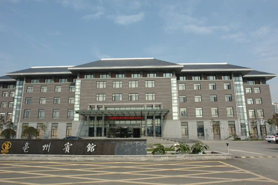
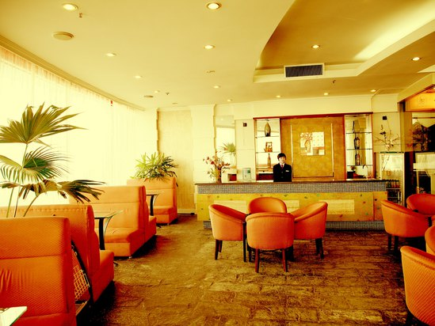
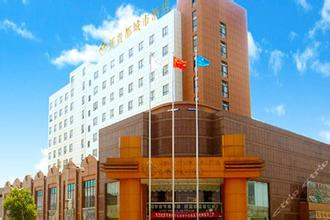
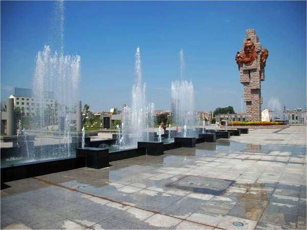
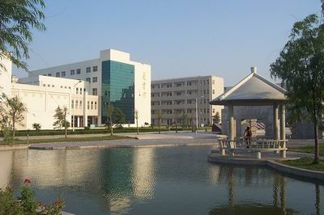

1.牛肉馍
- 简介：牛肉馍为亳州市谯城区特有的小吃，牛肉馍为清真食品。它以上好的黄牛肉为主料，佐以粉丝、葱、及多味中药材配料，是深受市民和游客们喜爱的小吃。它色泽金黄、外脆里嫩。每天清晨，城区各个牛肉馍的摊点都会荡漾着扑鼻的香味，就像芳香扑鼻的鲜花开满城区的角角落落。牛肉馍是直径35-40厘米、厚3-5厘米的圆形饼，因此要把它放在特制的圆形平底锅内炕，并要兑上清香油用文火细炕，且不断地翻转，约30分钟即可。熟透的牛肉馍外壳油亮亮、光灿灿的，入口时能发出脆响的声音，里面的馅儿分多层，层层鲜嫩而不油腻，做到这些才算是口味绝佳的牛肉馍。
- 牛肉膜的历史：相传牛肉馍在清朝时便产生了，亳州牛肉馍是花戏楼附近的李姓回族所创，至今李氏传人仍在制作，一百多年来一直深受人们喜爱，是药都的特产之一。这个“特”字不仅包含着特别的美味，还包含着仅在亳州才能吃到的特别之处，因为到目前为止，在外地还吃不到亳州这一美食。 牛肉馍因其独特的美味深受人们喜爱，也正因为如此，它一直历久弥新。每天清晨，个个摊点冒出的缕缕炊烟伴着牛肉馍的阵阵香气在阳光的照射下显得异常美丽，人们边吃边聊，就像广东人喝早茶一样富有诗意。
- 攻略：牛肉馍为清真食品，目前只有早餐，时间6-11点之间可以食到，亳州有很多街边摊都在做牛肉馍，一斤价格在10元至12元左右（2014年的价格）。
- 吃法：切成小块装盘子用筷子夹着吃或者用豆腐皮包起来手拿着吃，搭配蒜汁或蒜瓣风味和口感更佳,因为大蒜可以缓解油腻。如果能再来一碗正宗亳州嘛糊或咸豆沫，那就更美了。
- 营养价值：牛肉含有丰富的蛋白质，氨基酸组成比猪肉更接近人体需要，能提高机体抗病能力，对生长发育及手术后、病后调养的人在补充失血和修复组织等方面特别适宜。寒冬食牛肉，有暖胃作用，为寒冬补益佳品。中医认为：牛肉有补中益气、滋养脾胃、强健筋骨、化痰息风、止渴止涎的功能。适用于中气下陷、气短体虚，筋骨酸软和贫血久病及面黄目眩之人食用。
2.蒙城撒汤
- 简介：蒙城撒汤是皖北一带百姓早晨主要的小吃，源于亳州市蒙城县。“撒汤”本为“沙汤”,沙为肉汤、肉杂之意，因其字生僻，老百姓误写为“撒汤”、“杀汤”等。撒汤是用老母鸡、猪排等为原料，炖好后，打生鸡蛋在碗里，搅拌均匀后，用沸腾的肉汤浇沏，制成黄橙的肉汤蛋花茶，并在上面撒上牛肉末 芥末 和芝麻油。据传乾隆皇帝下江南时，偶尝此汤，大加赞赏，从此撒汤声名远播。现今撒汤传遍江淮大地，成为风味独特的安徽著名小吃。
- 主要食材：老母鸡，猪排，鸡蛋，牛肉，芥末，芝麻油
- 撒汤由来：话说清朝乾隆年间，乾隆皇帝微服游访江南路过蒙城 ，走得又饥又渴，傍晚，到一家客店投宿，店主是位老妈妈，还有她的独生女儿。老妈妈见来了几位贵客，虽然风尘满面，穿戴却十分整齐，店家婆笑脸相迎，一面端茶，一面吩咐女儿杀了两只肥老母鸡，用沙锅煨炖。时值初夏季节，乾隆和侍从坐在院中，一边饮茶，一边闲聊，等待用膳，谁知直等到日落月上柳梢，还不见店家送饭，乾隆饿得饥肠漉漉，命侍从前去催促，店家回答说：“鸡汤没煨好，请客官再稍候。”乾隆心中不耐烦，步出小店，看个究竟，只见店家婆正在门前月下磕麦仁。乾隆问道：“老妈妈，磕麦仁做什么呀？”店家婆答道：“俺这里没有稻米，都用麦仁烧稀饭吃。”乾隆双手捧起一捧白花花的麦仁走进厨房，对姑娘说：“把这麦仁放进鸡汤锅里好吃吗？”姑娘微笑道：“会好吃的。”说着掀起锅盖，乾隆把麦仁放了进去。乾隆回到院中又等了半个时辰，忽闻一阵扑鼻的香味从厨房飘来。姑娘盛了几碗鸡汤，放入麻油、胡椒等调料，用托盘端置桌上。乾隆品尝了一口，味道十分鲜美，用竹筷一捞，鸡肉已经脱骨，与麦仁混和在一起，吃起来胜过皇宫御宴！乾隆连吃三大碗，赞道：好汤。乾隆膳后问店家这汤的名字，店家也不知道这汤的名字，于是小声嘀咕了一句“啥汤”。这啥汤本是蒙城土语“什么汤的意思”可乾隆皇帝误以为这汤就叫“啥汤”，乾隆一高兴想留下墨宝给这位店家，就问这店家啥字怎么写，可是这店家不识字不知道怎么写，还是乾隆身边的一个侍从急中生智，想起皇上在月下久等鸡汤的情景，于是便编造了个生字：月光为伴，一边为“月”字，另一边皇上为天子，“天”字为上头，久等的“久”字放在下边，并取其谐音字“韭”代之，这样便造出一个“啥”谐音的“撒”字。乾隆看看也像个字样，但觉得眼生，记不清什么时候在康熙皇爷字典里似曾见过。于是命侍从取出文房四宝，提笔写“撒汤”二字，下边题了“乾隆御书”留给了店家。店家婆不识字，把乾隆题字拿给当地一位有学问的人看，那人一看，大吃一惊，说是当今乾隆皇帝的亲笔题字。事后店家请木匠精心制作了一块招牌，将乾隆题字刻在上面。过往行人见此招牌，都来品尝乾隆皇帝品尝过的“撒汤”。从此，小店生意十分兴隆。其他店家见此，也模仿乾隆御书“撒汤”字样做出金字招牌，开起了撒汤店。
3.涡阳干扣面
- 简介：涡阳干扣面是安徽省亳州市涡阳地区的一种独具风味的汉族传统面食，以煮熟的黄豆芽作铺垫，配以蒜汁、葱花、味精、胡椒、食醋、香油、酱油等为底料，煮熟的面条如雀巢一样覆盖其上，再以油榨辣椒作上料，充分搅拌以后即可。干扣面已成为涡阳街面上的一道迷人的风景，有过往商贾来涡必吃干扣面、“不吃干扣面枉来老子故里”之说。
- 制作方式：
1.先在碗底放一些略稀的蒜汁，加以葱花（一定是葱白部分的）和一些佐料：点滴的酱油和醋，点滴的麻油，点滴的胡椒和味精之类。
2.开始煮面，直接放在沸水里，不过这个面条一定要是加了碱的面条，才会有口感，面也不会坨。煮面的时候第一次滚锅，要掀开锅盖加一次凉水，因为是碱面，煮的比较慢。
3.同时再煮上一锅豆芽汤，豆芽和面条一样都是直接放在清水里煮就行，不用加任何调料。喜欢荷包蛋的可以在豆芽汤里打个鸡蛋（注：黄豆芽）。
4.煮好的豆芽汤捞起部分豆芽，铺在放好调料的碗里。上面再放上煮好的面条，然后，上面一定要加辣椒油。
- 食品特点：其特点是香辣诱口，筋道挡饿。如果和五香狗肉等食品搭配而食，就更觉味道厚重。吃完面再喝上一碗清香爽口的豆芽纯汤，更觉美不胜收，过口不忘。
1.亳州宾馆
- 简介：首家五星标准，徽派园林式风格设计亳州宾馆座落于“华佗故里、药材之乡”的亳州市，坐拥市政府、经济开发区、高端人居社区、高校等核心资源，以及105国道、济广高速、京九铁路等交通优势。是亳州市政府与古井集团共同投资按五星级标准打造的魅力宾馆。整体建筑徽派园林式风格设计，与蓝天白云交相辉映，浑然天成，亳州宾馆拥有166间套高雅舒适客房；4个文化主题餐厅；6个按不同需求设计的多功能会议室；同时拥有网球场、游泳池、健身中心、主体酒吧影院、桑拿休闲中心、地上地下双位停车场，以及智能化的安保系统。地理位置优越，出行交通便利。

- 特色：
人性化高质量服务，智尊之选，难忘体验。亳州宾馆房间设计时尚独特，尽可能把酒店的特色呈现出来，房间配套设施完善24小时热水、空调、电视、免费宽带基本设施都以完善配备。住宿环境温馨舒适，装修风格简约大方。宾馆为了把人性化服务做到更好，均有荞麦枕芯、薰衣草枕芯、决明子枕芯、竹炭枕芯等各色枕头供您选择，提高您的睡眠质量。为了保护我们的生存环境，节约能源，我们响应政府的号召，开展“创建绿色饭店”活动，并且已在饭店各区域推出一系列“绿色服务”和“绿色产品。
- 联系方式：
酒店地址: 亳州 谯城区药都大道1599号（与希夷大道交汇处）
订房专线: 4007-33-4007
2.亳州海顿饭店

- 简介：亳州海顿饭店是一家集客房、餐饮、康体娱乐为一体的三星级涉外旅游酒店。亳州海顿饭店地处中国历史文化名城亳州市市中心幸福桥广场。市内多路公交车，中巴车等均可抵达，交通极为便利，周边有誉满中原的花戏楼、曹操地下运兵道、华佗故居等名胜景点、繁华的商业网点和集贸市场，旅游购物十分便利。亳州海顿饭店房内均配有虚拟网、国内国际直拔电话，40频道卫星电视，可调试中央空调，24小时热水供应。亳州海顿饭店拥有风格迥异，高雅富丽的餐饮包厢18间，“海之客”中餐大厅可同时满足200余人用餐，提供由淮扬、徽、港、澳、川名厨主理的风味精致菜肴，是您商务宴请和亲友聚会的绝佳选择。
- 周边景点：
新泰步行街、金元宝商城、盖盛祥大卖场、金色华联超市、商之都、华佗故居、花戏楼、曹操地下运兵道、曹操公园、三国览胜宫、亳州市政府
- 地址：亳州市谯城区幸福桥广场
2.亳州新贵都城市酒店

- 简介：亳州新贵都城市酒店是青岛集团公司和亳州友阳房地产开发有限公司共同投资1.2亿元建造的一家集住宿、餐饮、娱乐、商务、休闲于一体的现代化绿色商务酒店。拥有各式高雅、舒适的豪华客房。所有房间均由知名设计师专业设计，在材质选择及颜色运用上引入了绿色、环保理念和全新的时尚概念。房间宽敞明亮并配备电脑、宽带专线上网接口、等离子电视、国际卫星频道、私人保险箱、直接饮用水系统、进口高级洁具和分离式淋浴间等，是您商务旅行、常驻办公的绝佳场所。
- 周边景点：三国揽胜宫、华祖庵、花戏楼
- 地址： 亳州市谯城区芍花路友阳商业步行街
1.魏武广场
- 简介：东临魏武大道，南临光明路，北、西侧是环魏武广场沥清砼道路。广场占地68600平方米（合103亩），该广场设计理念为简约、文化、生态、休闲，既传承古代文明，提炼历史精华，又弘扬现代成就，衔接古今文脉。既突出了历史文化名城特色，展示现代文明，满足市民休闲需要，同时也反映了当代亳州城市精神风貌。魏武广场由历史长廊、天幕剧场、历史年轮、开放空间四部分组成。

- 历史长廊：历史长廊是魏武广场的南北轴线，起点在光明路主入口处，由南至北全长170米，共分六个层次逐步展开，依次为牌坊墙、地支柱、纪念墙、地雕、喷泉、主体雕塑、天干柱、道德经，止于天幕剧场。纪念墙共雕刻十八位亳州历史人物头像和介绍，地雕刻有古亳州地图和九处亳州名胜。主题雕塑高18.6米, 上方四面分别挂着曹操、老子、华佗、庄子四位历史人物铜像。在历史长廊收尾处是一处“道德经”景墙，墙高2.4米，饰面为糙面花岗岩，又再次阐述亳州历史源远流长。西北侧电子屏幕一台，面积80平方米，供人们观看相关节目。
- 天幕剧场：天幕剧场位于历史长廊主轴的北端，是群众露天集会场所。占地南北长60米，东西长140米，可容纳1500余名观众。它不仅能满足市民对丰富的精神文化生活需要，也给社会义演、公益宣传等提高全社会的精神面貌的活动提供了一个较为理想的场地。
- 历史年轮：从魏武大道次入口前行是历史年轮，该年轮直径达150米，中间采用青石板铺装，一条中心主干道环绕中心，三条1.5米宽的游园路，环绕中心主干道，加之十一条以年轮为中心放射路形成年轮，使得历史年轮空间是一幅较为立体的绿色画面，核心部分是高大的乔木，由内向外的年轮轮廓是中乔木、小乔木、灌木、草坪约15000平方米，在城市中形成绿色的广场。
2.涡河公园
- 简介：涡河——亳州的母亲河，自西向东蜿蜒流过，孕育了亳州灿烂的古代文化。随着亳州城区的不断扩张，涡河一度成为亳州北向发展的天然屏障，尤其是赫赫沿岸的污染、挤占等现象，一度成为城区美化的障碍。亳州市委市政府高度重视文化旅游业的发展，积极打造涡河景观带，丰富涡河沿岸景观带的文化内涵，开发涡河黄金旅游线，切实推进“中华药都•养生亳州”三年行动计划的实施。市政府高度要求，着重强调要加大涡河旅游项目开发力度，在沿涡河两岸建一些景点、恢复一些老的建筑;沿涡河两岸生态建设要上一个层次，把种树作为一项专项任务，鼓励群众、学校、企事业单位在涡河两岸成片植树造林，改善涡河两岸的植被，打造出原生态的两岸风光、涡河的文明、涡河的文化，力争把碧水蓝天的涡河及两岸风光再现给游客，让渔舟唱晚，再现涡河。进一步发挥涡河旅游经济的推动作用。
- 特色：涡河两岸景观（已更名为”涡河公园“）带在以人为本、因地制宜、可持续发展的原则指导下，整个项目分为汤都风情区、酒乡古韵区、药都馨香区和自然生态区四个部分。在汤都风情区中，老子出关、庄周梦蝶、华佗把脉、五禽广场等颇具历史人文色彩的元素都将融入其中，游览者可以在游玩中感受到文化气息的熏陶。
- 作用：该景观将成为新皖北生态旅游“中国药都”旅游的新名片。
3.亳州一中

- 简介：亳州一中是中国历史文化名城亳州建立最早的一所现代中学，始建于1910年（清宣统二年），1948年亳州解放后更名为亳州中学，1959年正式定名为安徽省亳县第一中学，列入省属重点中学；1986年更名为安徽省亳州市第一中学。1999年顺利通过省级评估验收，成为安徽省首批“示范高中”。2000年地级亳州市成立，亳州一中成为亳州市唯一一所市直中学。经过百年历史与文化积淀，如今已桃李满天下，芳香飘神州，学校已培养出数以万计的优秀人才，在各个行业各条战线上，为祖国繁荣、人类进步做出了杰出的贡献。
- 感受：校园内绿树环抱，碧草如茵，环境幽雅，景色怡人，被亳州市政府命名为“花园式单位”。在这里感受百年历史与文化积淀也是一种享受！